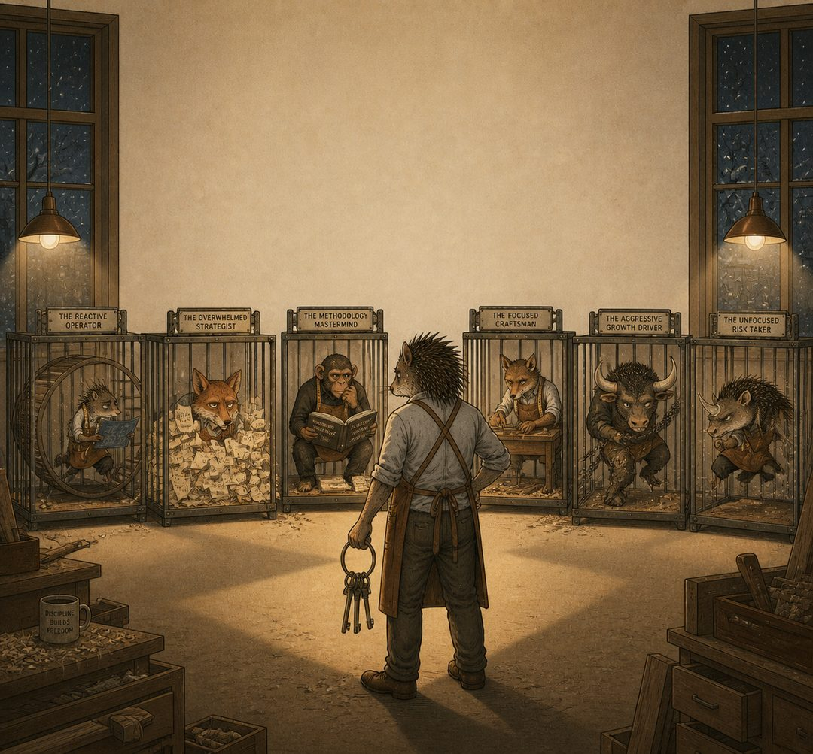
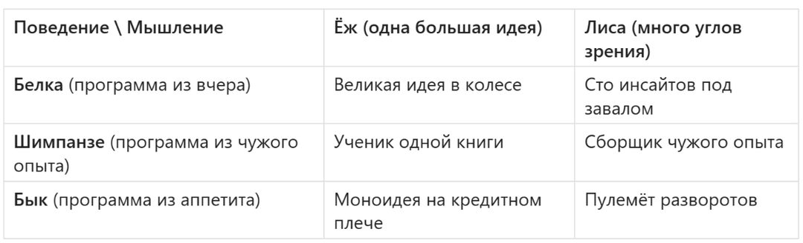
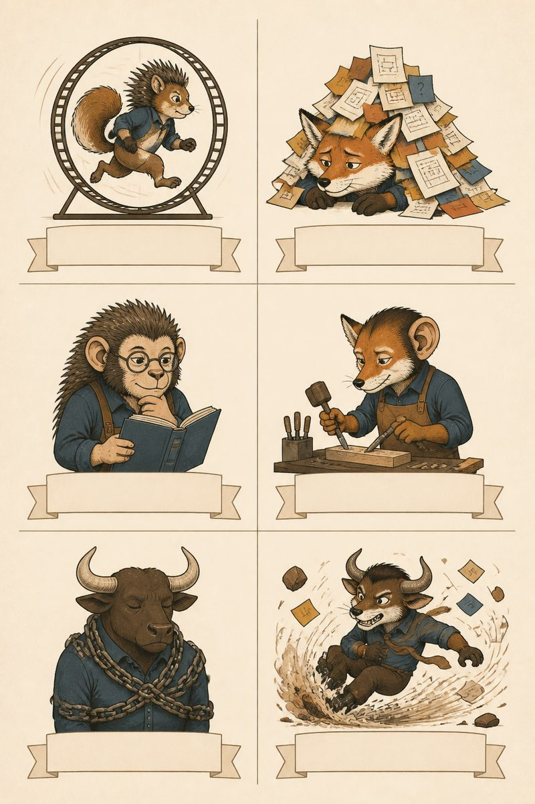
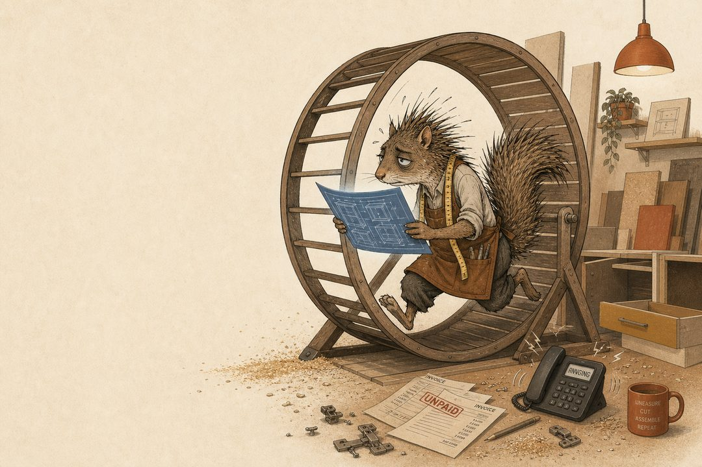
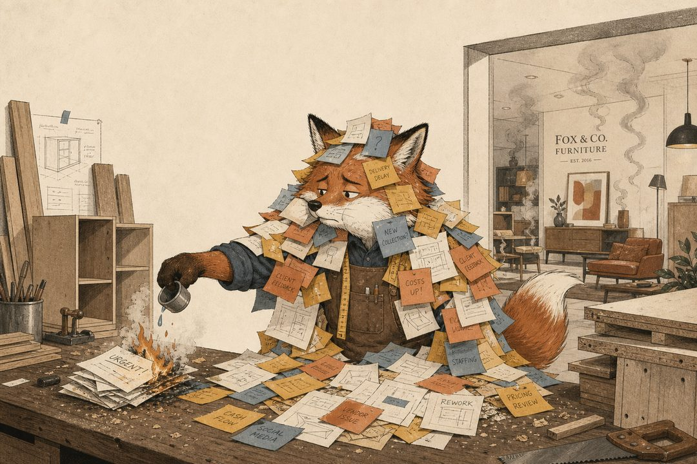
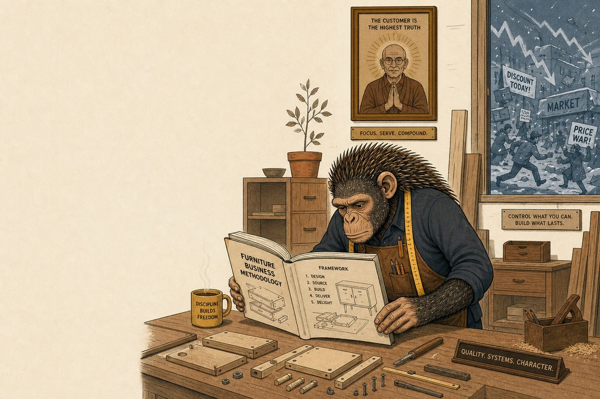
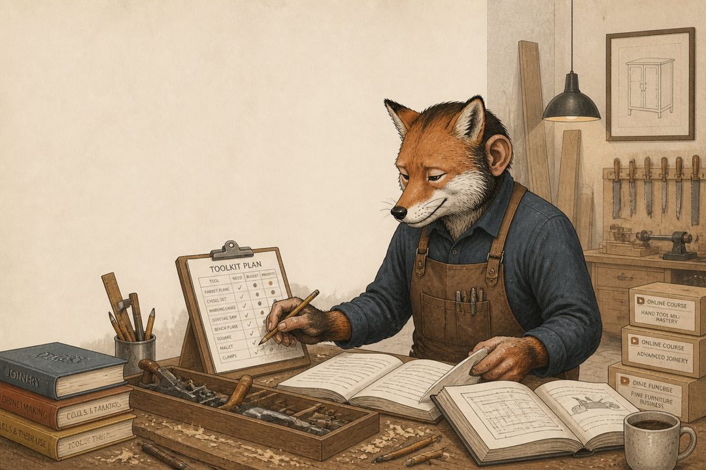
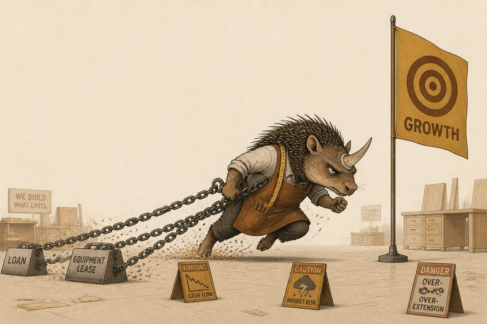
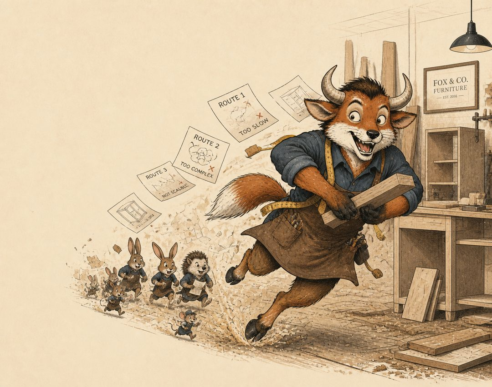
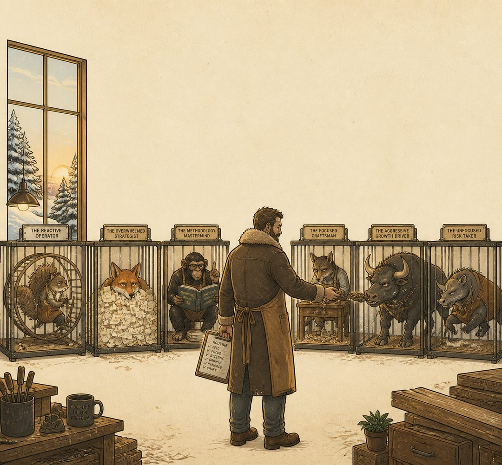

Как прогулка по Иерусалимскому зоопарку превратила старую дихотомию Исайи Берлина в карту выживания для мебельного бизнеса
Откуда это взялось
Недавно я бродил по Иерусалимскому библейскому зоопарку. Занятие, казалось бы, максимально далёкое от падающего спроса на кухни, кассовых разрывов и ставки, при которой кредит на новый станок выглядит как ставка в казино. Но мозг консультанта устроен подло: он не отдыхает, он подбирает метафоры.
В 1953 году философ Исайя Берлин написал эссе «Ёж и лиса» - формально про Толстого, фактически про всех нас. Он оттолкнулся от строчки древнегреческого поэта Архилоха: «Лиса знает много секретов, а ёж - один, но самый главный». Ёж видит мир через одну большую идею и подчиняет ей всё. Лиса видит множество идей, углов и противоречий и не сводит их к единому центру. Берлин, кстати, честно признавался, что задумывал это как интеллектуальную игру, не подозревая, что игра переживёт его самого.
Бизнес-литература выбрала сторону. Джим Коллинз в «От хорошего к великому» возвёл ежа в герои: найди свою одну великую идею и победишь. А потом пришёл Филип Тетлок с исследованием десятков тысяч экспертных прогнозов и испортил праздник: лисы стабильно предсказывают будущее точнее ежей. В спокойные времена это академический спор. В кризис вопрос выживания: кризис состоит из прогнозов, которые не сбылись.
Но, стоя между вольерами, я понял, чего этой красивой дихотомии не хватает.
Она про мышление, а кризис проверяет не мышление - кризис проверяет поведение.
Я знаю мебельщиков-лис: начитанных, видящих рынок объёмно, способных за вечер разобрать чужую бизнес-модель на молекулы. И ведущих себя при этом как белка в колесе: с утра до ночи в цеху, в WhatsApp, в счетах. Я знаю ежей с великой идеей, которые при первом шорохе рынка несутся, как бык на тряпку, занимать деньги «на рывок». Мышление и поведение = это разные оси, и именно разрыв между ними убивает компании. Не глупость, а разрыв.
Так дихотомия Берлина получила вторую ось. Так появился мой зоопарк.

Вторая ось: откуда берётся ваша программа действий
Если ось мышления отвечает на вопрос «как вы видите мир», то ось поведения отвечает на вопрос куда более неприятный: откуда берётся программа ваших действий. У собственника таких источников три.
Из вчерашнего дня - Белка. Программа действий: «делаю то, что делал вчера, только быстрее». Колесо: счета, поставки, рекламации, монтажники, фурнитура, которая опять подорожала. Важная зоологическая деталь, к которой мы ещё вернёмся: дикая белка не крутит колесо - она делает запасы на зиму. Колесо белки - это следствие (изобретение) клетки.
Из чужого опыта - Шимпанзе. Программа действий: «делаю то, что делает авторитет». Приматологи называют это социальным обучением, и это действительно умная стратегия - не изобретать велосипед, а скопировать у того, кто уже едет. Есть нюанс: в природе шимпанзе копируют не самых умных сородичей, а самых статусных. Теперь посмотрите на список спикеров любого бизнес-форума и скажите, что у нас иначе.
Из собственного аппетита - Бык. Программа действий: «вижу красную тряпку - иду». Большой рынок, большая мечта, оценка в миллиард, «захватим всю мебель региона». И снова зоология подбрасывает иронию: быки не различают красный цвет. Они реагируют не на цвет тряпки, а на её движение. Рынок тоже не «красный» и не «горячий», просто кто-то умело им машет. А вот хайп - это и есть движение тряпки.
Скрещиваем две оси и получаем матрицу АБ.
Матрица АБ

Шесть клеток и ни одной «правильной», и это не недоработка, а конструкция: это диагностический инструмент, а не доска почёта. Пройдёмся по вольерам, в каждом увидим портрет, мебельный кейс, кризисный сценарий и один ход на выживание.

Шесть портретов
1. Ёж-белка: великая идея в колесе
Портрет. У него есть концепция, и она хорошая: «мы делаем лучший премиальный шкаф-купе в городе», «наша кухня - это инженерия, а не фасады». Идея живёт в презентации, в шапке сайта, в его голове. А он сам живёт в цеху. Закупки, замеры, рекламация по петлям, монтажник запил. Идея есть. Прорыва нет - на прорыв не остаётся ни часа.

Кейс. Фабрика с сильным позиционированием и нулевым ростом. Собственник лично проверяет каждую отгрузку, потому что «никто, кроме меня». Десять лет «никто, кроме меня». Спросите его о стратегии и он ответит блестяще, но между двумя звонками поставщику ЛДСП.
Кризис. Спрос проседает, и ёж-белка отвечает единственным известным ему способом: крутить колесо быстрее - работать больше, спать меньше. Колесо то же самое, белка худеет. Великая идея так и не вышла из презентации в воронку продаж.
Ход на выживание. Один день в неделю проводить вне колеса, под замком, без телефона. И один вопрос на этот день: что из моей великой идеи клиент реально видит и пересказывает другим? Если идея не пересказывается, то её нет. В кризис выживает не тот, кто больше работает, а тот, кого больше рекомендуют.
2. Лиса-белка: сто инсайтов под завалом
Портрет. Самый трагический персонаж зоопарка. Умный, начитанный, видит рынок в четырёх измерениях. Заметки полны блестящих гипотез: партнёрская программа с дизайнерами, новый формат шоурума, подписка на обслуживание мебели. Но все гипотезы двухлетней давности, потому что каждый день - это пожар, и тушит его лично он.

Кейс. Владелец шоурума и небольшого производства. Строит «платформу будущего» и одновременно лично выбирает фурнитуру, потому что менеджер «не чувствует». Стратегическая сессия с самим собой по дороге домой, в пробке. Протокол не ведётся.
Кризис. Кризис для лисы-белки - праздник генерации: по три антикризисные идеи в неделю. Ни одна не доживает до пятницы. Хуже того: множественность углов зрения превращается в паралич: лиса слишком хорошо видит риски каждого варианта, чтобы выбрать хоть один.
Ход на выживание. Жестокое правило: одна идея, один срок, один ответственный (не вы). Остальные девяносто девять - в морозилку, письменно, с датой разморозки. Лиса с одной размороженной идеей в руках опаснее для конкурентов, чем ёж со всей его философией.
3. Ёж-шимпанзе: ученик одной книги
Портрет. У него есть Учитель. Один. Это может быть Адизес, EOS, любимый автор или гуру с курса за триста тысяч. И надо отдать должное: он не попугай, он копирует умно - системно, последовательно, с внедрением. Вся компания выстроена «по книге». Проблема одна: книга писалась не для его рынка, не для его города и точно не для этого кризиса.

Кейс. Производство, где всё «по методологии»: правильные совещания, правильные роли, правильные дашборды. Рынок при этом требует неправильного - быстрого, грязного, не предусмотренного методичкой. А на неправильное нет благословения Учителя.
Кризис. Самый коварный сценарий: ёж-шимпанзе продолжает делать всё правильно - по методичке. Просто рынок ушёл туда, где методичка не действует. Он будет совершенствовать процессы до самого конца, и конец будет идеально задокументирован.
Ход на выживание. Оставить каркас - он не вреден. Но выдать себе письменную лицензию на ересь в тактике: любое отклонение от канона разрешено, если его подтверждают цифры. Сверяться с отчётом о движении денег, а не с цитатами. Учитель не придёт платить зарплату вашему цеху.
4. Лиса-шимпанзе: сборщик чужого опыта
Портрет. Сильнейший паттерн в зоопарке. Учится у многих и осознанно: у одного берёт продажи, у другого - производство, у третьего - финансы. Собирает собственный гибрид и, что важно, сверяет его с цифрами, а не только с конспектами. Если в матрице и есть клетка, из которой ближе всего к выходу, то это она.

Кейс. Собственник, собравший рабочий стек: стратегия по одному автору, процессы по другому, переговоры по третьему. Стек работает, потому что хозяин стека помнит: методология - это гипотеза, а не религия.
Кризис. У сильного паттерна - сильная тень: курсовой туризм. В кризис обучение превращается в анестезию: записаться на ещё один курс психологически легче, чем позвонить десяти ушедшим клиентам. Сборщик опыта рискует коллекционировать чужие решения вместо принятия собственных.
Ход на выживание. Правило 72 часов: любой заимствованный приём либо внедряется за три дня хотя бы в черновом виде, либо выбрасывается. И сменить источники: в кризис учиться у тех, кто выживает в этом кризисе, а не у тех, кто красиво описал прошлый.
5. Ёж-бык: моноидея на кредитном плече
Портрет. Визионер с одной тряпкой. «Рынок мебели региона будет наш», «выйдем на миллиард к 2028-му». Под идею берутся кредиты, находятся инвесторы и новые площади. Сигналы о том, что рынок меньше мечты, а экономика одной сделки не сходится, отметаются как маловерие. Мечтает стать единорогом, не замечая иронии: единорог это, в сущности, бык, который поверил, что один рог лучше двух. Сказочным существам проще, у них нет кредитной нагрузки.

Кейс. Компания, которая «сразу строилась на масштаб»: производственные площади на вырост, штат на вырост, лизинг на вырост. Не выросло только одно - платёжеспособный спрос, который никто не удосужился проверить до подписания договоров.
Кризис. Здесь всё быстро. Ставка превращает кредитное плечо в гильотину, отложенный спрос - в отложенные навсегда заказы. «Прорвёмся» - это боевой клич, а не финансовая модель. В удачном сценарии ёж-бык - герой деловой прессы, но в типичном - это учебный кейс для остальных пяти клеток.
Ход на выживание. Пересчитать юнит-экономику по текущей ставке, текущему циклу сделки и текущей конверсии без «когда рынок развернётся». Если математика не сходится, то резать масштаб до точки, где сходится, как бы ни было больно рогам. Рога нужны для рынка, а не для тарана собственного баланса.
6. Лиса-бык: пулемёт разворотов
Портрет. Видит много возможностей, схватывает сигналы раньше всех и при этом обладает бычьей тягой к экшену. Выбирает тряпку и несётся, по дороге трижды меняя маршрут. Сегодня - мебель для застройщиков, через квартал - маркетплейсы, ещё через квартал - франшиза. Всё на полной скорости. В хорошей конфигурации это сильный предприниматель, в плохой - генератор очень дорогих экспериментов.

Кейс. Каждые полгода - честная стратегическая сессия. Данные собраны, риски видны. И каждый раз выбирается самый рискованный сценарий, потому что остальные скучные. Команда узнаёт о новом курсе по тону утренней планёрки.
Кризис. Каждый разворот стоит денег: переобучение людей, новые материалы, брошенные наработки, выжженное доверие команды. В кризис деньги заканчиваются быстрее, чем идеи, а у лисы-быка идеи не заканчиваются никогда. Это и есть приговор.
Ход на выживание. Посчитать полную стоимость последних трёх разворотов: в деньгах и в уволившихся людях. Цифра отрезвляет лучше любого коуча. И назначить себе совет директоров из одного трезвого человека - финансиста, партнёра, жены - с реальным правом вето на следующий разворот.
Тест на одну минуту
Три вопроса, никакого психолога не нужно.
Вопрос 1, ось мышления. Сформулируйте стратегию компании одной фразой. Фраза выскочила мгновенно - вы ёж. Начали с «ну, тут смотря с какой стороны посмотреть» - лиса. Оба ответа нормальные. Ненормально - не знать, какой из них ваш.
Вопрос 2, ось поведения. Вспомните три последних серьёзных решения. Откуда они взялись? «Мы всегда так делали» - белка. «Прочитал у... / услышал на курсе / увидел у конкурента» - шимпанзе. «Почувствовал: надо переть» - бык.
Вопрос 3, кризис-тест. Что вы сделали в первый месяц, когда спрос просел? Стали работать больше - белка. Купили курс - шимпанзе. Пошли за кредитом на рывок - бык. Этот вопрос точнее первых двух: в кризис маски снимаются, остаётся животное.
Выход из клетки
Теперь главное. В матрице нет хорошей клетки, и выход из неё не в том, чтобы найти седьмое, правильное животное. Его не существует.
Выход - перестать быть животным и стать смотрителем зоопарка.

Смотритель не отождествляется ни с одним вольером. Он знает повадки каждого зверя, включая своих внутренних, и решает, кого, когда и чем кормить. Каждое животное в матрице имеет дикую, полезную форму и клеточную, разрушительную. Белка в колесе бессмысленна; белка, делающая запасы на зиму, - это образец финансовой дисциплины. Шимпанзе, копирующий статусных, смешон; шимпанзе, перенимающий приёмы у выживших, экономит годы. Бык, несущийся на машущую тряпку, опасен для себя; один точный, посчитанный удар рогом решает то, что не решат десять стратегических сессий.
Кризис - это зима, и зимний протокол смотрителя выглядит так:
Неделя лисы. Честная диагностика без любимой идеи. Все версии происходящего, цифры на стол: воронка, маржа по продуктам, денежный поток на тринадцать недель вперёд. Лисы не зря выигрывают у ежей в прогнозах, так что дайте лисе неделю.
День ежа. Из всего многообразия - одна фраза: на чём зимуем. Не три приоритета, а один. Лиса собрала картину, а ёж выбирает точку.
Режим правильной белки. Запасы, а не колесо. Платёжный календарь, контроль каждого рубля предоплат, резерв. Скучно? Зимой скучная белка хоронит ярких.
Час шимпанзе. Заимствовать, но только у тех, кто проходит эту зиму живым, и только по правилу 72 часов: внедрил за три дня или выбросил.
Удар быка. Один. Точечный. Посчитанный. Не фронтальная атака на весь рынок, а атака на один сегмент, где вы объективно сильнее всех. Бык, бьющий в одну точку, страшнее быка, несущегося по полю.
Лиса → ёж → белка → шимпанзе → бык. Да, здесь обе оси и мышления и поведения намеренно свёрнуты в одну линию: зимой не до геометрии матрицы, важна очередность включения. Темперамент - у животных, у смотрителя - протокол.
P.S.
В конце той прогулки по зоопарку я остановился у очередного вольера и подумал банальную, в общем-то, вещь. Животное не выбирает клетку: ни ту, что из прутьев, ни ту, что в матрице. Шимпанзе никогда не задумается, у кого он учится. Бык не спросит себя, кто машет тряпкой.
А вы можете! Это, собственно, единственное, что отличает собственника от его внутреннего зверинца. И в кризис это отличие стоит дороже любого станка.
Ось «ёж - лиса» - Исайя Берлин, эссе «Ёж и лиса» (1953); данные о точности прогнозов лис - исследования Филипа Тетлока. Поведенческая ось «белка - шимпанзе - бык» и матрица «мышление × поведение» - авторская разработка.